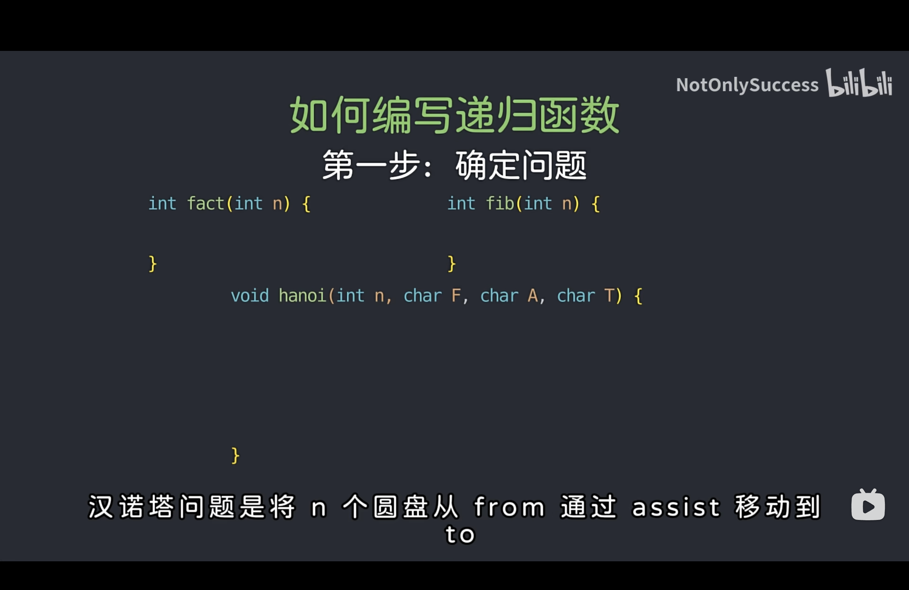
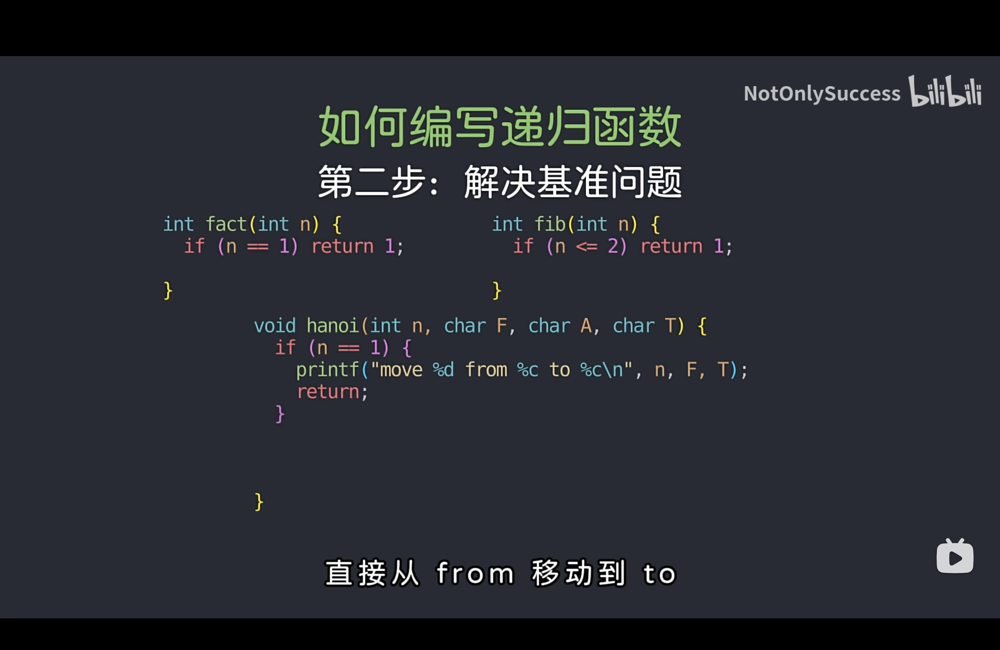
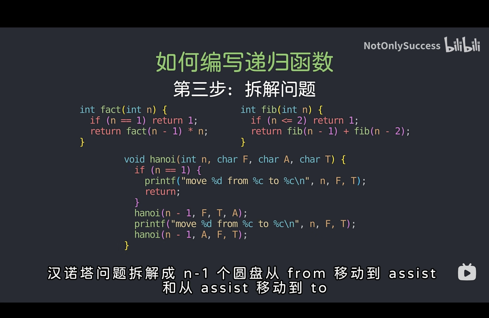

递归算法的理解
目录
如何写一个递归算法
- 确定问题：给当前的算法一个符合计算机处理流程的解释。例如对于斐波那契数数列求解
int fib(int n)，应该翻译成计算数列第n项并返回数列的值

- 解决基准问题：思考当输入值为基础值时，其返回的结果是什么。该步用于确定递归终止条件。例如对于汉诺塔问题，在只有一块积木时只需要将其从From移到Target即可

-
拆解问题：考虑在当前的普通输入时，应该如何解决问题。例如对于斐波那契数数列求解，当前应该返回的值是
fib(n-1)+fib(n-2)。❗️❗️不要尝试去思考其内部具体是如何执行的，只要把当前函数当作一个已经实现的库函数即可。否则只会越绕越晕。

递归算法举例分析
二叉树遍历
- 确定问题：遍历以root为根结点的二叉树
- 解决基准问题：当root为空指针时返回
- 拆解问题：在访问完当前结点后，继续遍历左子树（具体说：遍历以root->left为根结点的二叉树），继续遍历右子树（具体说：遍历以root->right为根结点的二叉树）
// 二叉树的遍历框架
void traverse(TreeNode* root) {
if (root == nullptr) {
return;
}
cout << root->val<<endl;
traverse(root->left);
traverse(root->right);
}二叉树的最大深度
- 确定问题：计算以root为根结点的二叉树的最大深度并返回最大深度
- 解决基准问题：当root为空指针时，表示该树空，返回0
- 拆解问题：当前结点的最大深度即为左右子树中的最大深度+1，所以只需要获取左右子树的最大深度后+1即可
// 定义：输入根节点，返回这棵二叉树的最大深度
int maxDepth(TreeNode* root) {
if (root == nullptr) {
return 0;
}
// 利用定义，计算左右子树的最大深度
int leftMax = maxDepth(root->left);
int rightMax = maxDepth(root->right);
// 整棵树的最大深度等于左右子树的最大深度取最大值，
// 然后再加上根节点自己
int res = std::max(leftMax, rightMax) + 1;
return res;
}在二叉搜索树中插入结点
- 确定问题：在root为根结点的二叉树中插入值为val的结点，返回root的根结点
- 解决基准问题：当root为空指针时，表示该树空，插入新结点
- 拆解问题：如果当前结点非空，那就表示待插入结点应该在左或右子树，那如果
root->val>val则在左子树中插入，如果root->val<val则在右子树中插入，并且返回值为当前子树的根结点（不用管插入的具体位置，以及是否为root->left或root->right，要想的只是把已经修改好的树返回给左右孩子指针），最后返回根结点root
// 在root为根的树中插入值为val的结点，并返回root
TreeNode* insertIntoBST(TreeNode* root, int val)
{
if (root == NULL)
{
TreeNode *new_node = new TreeNode(val);
return new_node;
}
if (root->val>val)
root->left = insertIntoBST(root->left, val);
else if (root->val<val)
root->right = insertIntoBST(root->right, val);
return root;
}